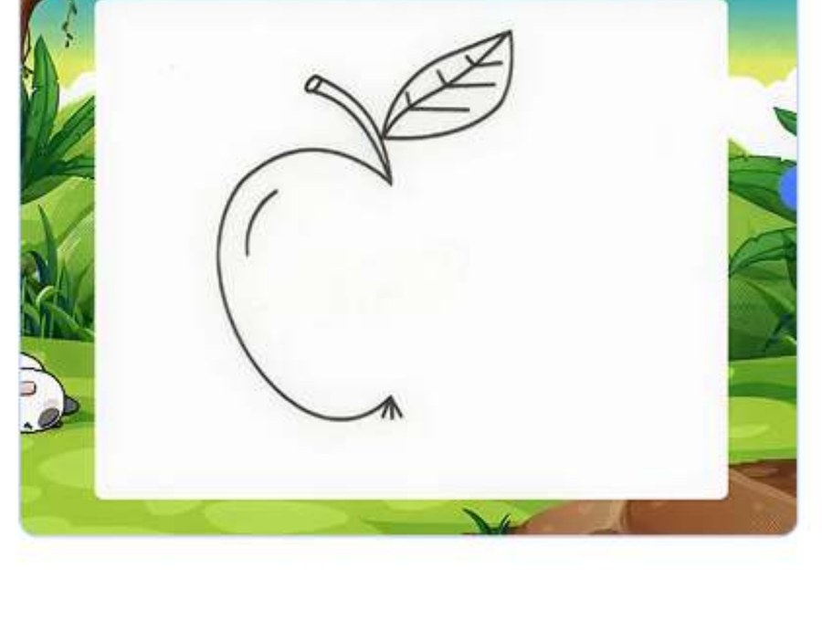

Contoh tampilan/proyek dari Modul 02
Modul ini adalah jembatan dari permainan fisik di Modul 1 menuju pemrograman blok yang sesungguhnya. Anak mulai menyusun blok urutan dan pengulangan (loop) untuk memecahkan teka-teki logika, lalu menerapkannya di dunia penuh warna dan bentuk bernama Colorville.
Ini modul pertama yang benar-benar memakai blok drag-and-drop terstruktur, bukan sekadar permainan fisik. Konsep pengulangan (loop) yang diperkenalkan di sini akan terus dipakai di hampir semua modul berikutnya — jadi penting anak benar-benar memahaminya lewat teka-teki, bukan sekadar menghafal istilah.
Anak menyusun urutan blok gerakan, mengenali pola yang berulang dan menerapkannya untuk memecahkan teka-teki, serta mengekspresikan kreativitas lewat warna dan bentuk saat menyelamatkan galeri dan merayakan festival di Colorville.
Sebelum mengajar modul ini, pastikan Anda 100% percaya diri dengan hal-hal berikut:
Saat anak stuck di sebuah teka-teki loop, ingat prinsip dari Bagian 2: beri petunjuk, bukan solusi — misalnya "blok mana yang membuat karakternya berjalan berulang-ulang?"
Sebagai hasil modul ini, anak-anak melanjutkan penjelajahan pemrograman, berkenalan dengan editor grafis, belajar menggambar dengan garis dan bentuk, dan menciptakan gambar pertama mereka.
Jawab kelima pertanyaan berikut tentang modul ini. Anda perlu mendapat 70% atau lebih (minimal 4 dari 5 benar) untuk melanjutkan.
1. Apa perbedaan mendasar antara Modul 1 dan Modul 2 dari sisi jenis pemrograman yang diperkenalkan?
2. Konsep "loop" atau pengulangan paling penting dipahami di modul ini karena...
3. Ketika anak stuck di teka-teki loop, respons tutor yang tepat menurut prinsip Bagian 2 adalah...
4. "Pesta Bentuk di Colorville" dan "Menyelamatkan Galeri Keajaiban" paling menekankan pengembangan...
5. Apa yang harus disiapkan tutor sebelum sesi modul ini, selain memahami interface platformnya?